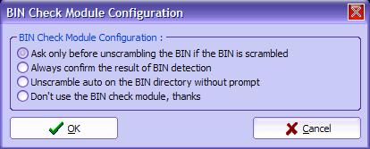
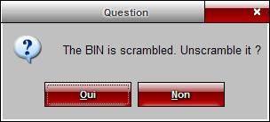
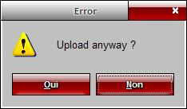
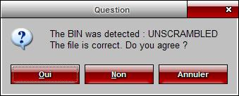
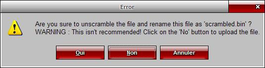

| 15. Module de détection des binaires |
Ce chapitre traite du module de détection des binaires.
En effet, il existe 2 types de fichiers binaires :
Normalement, Scrambled = Chiffré. Mais je ne préfère pas traduire, car vous risquez de rencontrer souvent cette notion. Je ne sais pas pourquoi par contre il existe ces 2 types. En revanche, DC-TOOL ne prend que les fichiers Unscrambled (=déchiffrés). Sinon le programme scrambled plante.
C'est pourquoi il existe ce module de détection.
1) Choix de votre méthode de détection
Allez dans Config > Configurer la détection des BIN. Vous avez une boîte de dialogue comme celle-ci :

Choississez votre mode ici. Vous pouvez choisir de ne pas l'utiliser directement, en cliquant sur le dernier bouton. Une fois votre choix fait, cliquez sur OK.
Etudions maintenant les differentes possibilités offertes.
a) Demander seulement si le BIN est scramblé
Essayer d'envoyer un fichier BIN scramblé. Vous aurez une question comme celle-ci :

Cliquez sur Oui pour renommer votre BIN actuel en <nom_du_bin>.Scrambled.bin et uploader le fichier corrigé. Si vous cliquez sur Non, vous aurez une autre question :

Si vous cliquez sur Oui, le fichier sera envoyé quand même. Souvent il ne fonctionne pas. Si vous cliquez sur Non, vous annulez l'opération.
b) Toujours confirmer le résultat de la détection
Si vous activez ceci, vous aurez une question du genre :

A chaque fois que vous envoyez un fichier binaire, vous devrez accepter et valider la détection. Si vous êtes d'accord : cliquez sur Oui. Sinon, cliquez sur Non. Si vous cliquez sur Oui, le fichier est envoyé si celui-ci est Unscrambled. Sinon, il est unscramblé puis envoyé.
Si vous cliquez sur Non alors que le fichier est unscrambled, vous aurez ceci :

Vous avez une explication de la situation.
c) Unscrambler automatiquement si le BIN est scramblé
Cette fonction ne demande rien, et unscramble un fichier scramblé automatiquement, même si il se trompe dans la détection.
d) Ne pas utiliser le module de détection, merci
Vous n'allez pas utiliser ce module. Vous devrez donc connaître la nature du BIN que vous envoyez.
2) Plus loin avec la notion Scrambled/Unscrambled
Vous pouvez vérifier à l'exterieur de DC-TOOL GUI si le programme que vous voulez envoyer est scrambled ou pas. Pour cela, télécharger 1st_read.bin File Checker v1.3 de Fackue.
A noter que le code de ma DLL BINCHECK.DLL a été traduit du Visual Basic par moi (je me suis fait aider sur Phidels.com, vu que je connais pas le VB). Merci Fackue pour son source code.